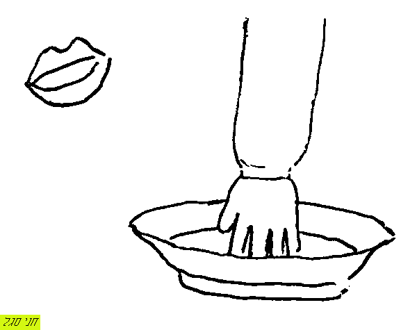

כלי-קיבול
אֵבוס
אגָן
- = מזרק [שבי"ל]
אגרטָל
אוֹב2
- = נאדות [רק בריבוי "אובות"] [שבי"ל]
אמתחת
- = שק שנמתח ונשטח כשממלאים אותו [שבי"ל]
- [באה רק בספר בראשית] / מוטי אהרוני (MOTI_AHARONI @ WALLA.CO.IL) -> האתר
אסוך
- = כלי קטן, כדי סיכת שמן [שבי"ל]
ארגָז
- = תרגומו "תיבותא" [שבי"ל]
- [באה רק בספר שמואל א] / מוטי אהרוני (MOTI_AHARONI @ WALLA.CO.IL)
ארון
ארון הברית
- גניזת כלי המקדש (קטעים) / חיים מ. י. גבריהו -> יבנה ביטאון האקדמאי הדתי, תשרי תש"ח
- ועשו ארון / אראל
- פולמוס ארון הברית בימי יאשיהו / יהודה אליצור -> מתוך: דברי הקונגרס העולמי השנים-עשר למדעי היהדות (תשנ"ז) א, ירושלים תשנ"ט
- מה קרה בבית אבינדב? או: מה ההבדל בין נכון לכידון? / אבינדב אבוקרט -> כפית ה'תשס"ב ניסן
אשיש
אשישה
אשפה
בקבוק
ברוֹם
- [רק בריבוי "ברומים"] [שבי"ל]
גֵבים
גביע
גולות[-מים]
- = כלים כדורים ומכונות להביא מים על ידיהם להשקות השדה [שבי"ל]
דוּד
דלי
- = כלי שמעלים בו מים [שבי"ל]
הים של שלמה
חמֶת
טנֶא
- = סל לפירות [שבי"ל]
ילקוט
- = כלי לדברים נלקטים [שבי"ל]
כְבִיר
- = ת"י "נודא" [שבי"ל]
- [באה רק בספר שמואל א] / מוטי אהרוני (MOTI_AHARONI @ WALLA.CO.IL)
כַד
 -> תקרת קניון קסטרא")
כוֹס1

כיור
- = לרחצה [שבי"ל]
כִיס
כלוב
כְפוֹר1
- = מזרק לקבל דם הקרבנות לכפרה [שבי"ל]
מוּצקוֹת
- = צינורות [שבי"ל]
מִזְרַק
- = כלי לקבל בו הדם לזריקה [שבי"ל]
מזרקות
מְמַד
- = כלי מדידה, נרדף ל"קו" [רק ברבים "מְמַדֶּיהָ. ואולי הוא בינוני פיעל, ואות הכפל נשלם בדגש] [שבי"ל]
משארת
משׂורה
נֹאד
- = כמו נבל, והוא של עור [שבי"ל]
נבֶל3
נדָן2
סִיר1
- הגחלים והסיר / סיגל, אראל -> מכתב
- לא בקרוב בנות בתים, היא הסיר ואנחנו הבשר / מחברים שונים -> מכתב
- מלחמת הג'ינגלים של הנביא יחזקאל / יהודה איזנברג -> קול ישראל
סַל
סלסלה
- = ת"י סלסלין [שבי"ל]

סף
סַף1
ספֶל
פָארור
פַך
- = כלי קטן לשמן [שבי"ל]
פָרור
- = נרדף לסיר [שבי"ל]
צלוחית
- = צנצנת [שבי"ל]
צֵלחת
צַלּחת
- = יורה [שבי"ל]
- 
{kind=link}
צנצנת
- = תרגומו "צלוחית" [שבי"ל]
צפחת
{kind=link}
קלחת
- = יורה או קדרה [שבי"ל]
קערה
רהטים
שוקת
- = כלי להשקות בו הצאן [שבי"ל]
- [באה רק בספר בראשית] / מוטי אהרוני (MOTI_AHARONI @ WALLA.CO.IL) -> האתר